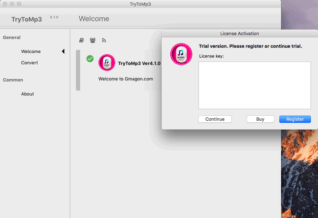
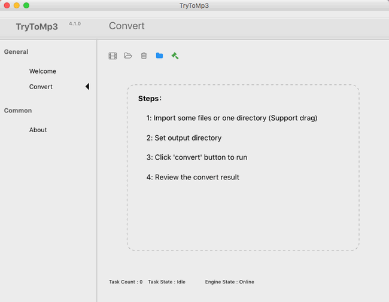

layout: guide
title: Mac XAVC to MP3-extract audio from XAVC as MP3 on Mac
keywords: extarct audio tracks from XAVC footage on a Mac, convert sound tracks in XAVC files to MP3, XAVC to MP3 Converter for Mac, acquire audio tracks from XAVC as MP3 on Mac
description: This article tells how to convert sound tracks in XAVC files to MP3 format via using a helpful XAVC to MP3 Converter for Mac.
Attempting to extarct audio tracks from XAVC footage on a Mac? This article tells how to convert sound tracks in XAVC files to MP3 format via using a helpful XAVC to MP3 Converter for Mac.
XAVC is much more than a format. It is the key to a professional and consumer 4K world, driven by Sony. It demonstrates Sony’s ability to bring innovation beyond HD to the whole industry. XAVC brings to life the “Beyond HD” vision and has been designed to serve the quality requirements of feature films, HDTV and commercials beyond 1080.
There are some times when you need to extract audio tracks from Sony XAVC footage. The simplest way is to convert XAVC to MP3 format which is compatible with almost all players while keeping high quality. In the following content, you will learn how to acquire MP3 audio from XAVC files on Mac OS X effortlessly.
How to extract audio from XAVC as MP3 on Mac?
Here’s what you need
Gmagon TryToMP3

To convert XAVC files to MP3 on Mac, follow these steps:
Step 1. Install and run Gmagon TryToMP3 on your Mac. Click “Continue” to try it out or click “Buy” to purchase it directly.

Step 2. After clicking “Continue”, switch to “Convert”, and the following interface will pop up.

Step 3. Click “Import files” or “Import directory” to add WebM files that you want to convert to MP3. More than converting XAVC files to MP3, this app can also convert a wide variety of other video/audio files to MP3 format on Mac in batches quickly.
After files loaded, click “Output directory” to set output path. When ready, click “Convert” to start. When the conversion is complete, click “Reveal in Folder” to find the generated MP3 files.
With Gmagon TryToMP3, you are able to acquire audio tracks from XAVC footage and save them as MP3 files on Mac easily and quickly.
Also read
How to convert Opus to MP3 on Mac?
How to convert large MOV to MP3 on Mac?
Mac TS to MP3 Converter-convert TS to MP3 on Mac
How to extract audio from WebM as MP3 on Mac?